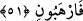

yaparlar.
“Onlar, üstlerindeki Rablerinden” işlerinin mâliki olan Allah’ın heybetinden O’na
tâzim ve hürmetten dolayı “korkarlar ve kendilerine ne emrolunursa onu yaparlar”
yâni yaratan tâat ve diğer yapılacak işlerden kendilerine neyi emrederse ağırlık ve
gevşeklik göstermeden O’nun emrini yerine getirirler.
“O, kullarının üstünde tam hâkimdir.” (el-En‘âm, 6/18) âyetinde belirtildiği üzere
Allah, kahrıyla (mutlâk hâkimiyeti ile) kullarının üstündedir, onlara hâkimdir. et-
Tibyan’da bu âyetin tefsiri ile ilgili olarak der ki: “Yâni kullarına gâlib ve üstün
olandır.” Ya da onlar Rablerinin üzerlerinden bir azab göndermesinden korkarlar,
demektir.
et-Te’vîlâtü’n-Necmiyye’de der ki: “Eğer “Onlar,” âsî olurlarsa “üstlerindeki
Rablerinden” kendilerine azabı getirmesinden “korkarlar.”
Bu âyetten meleklerin mükellef oldukları; emir, nehiy, vaad, tehdid (vaîd), korku ve
ümit arasında idâre edildikleri anlaşılmaktadır. Bir hadiste şöyle buyrulmuştur:
“Yedinci kat semada Allah’ın öyle melekleri vardır ki Allah’ın onları yarattığından beri
kıyâmet gününe kadar secde hâlindedirler. Allah korkusundan tir tir titrerler. Kıyâmet
günü olunca başlarını kaldırırlar ve: “Sana hakkıyla ibâdet edemedik.” derler. Ebu’l-
Leys Tefsiri’nde böyle geçmektedir.
İşâret lisânında denilir ki: Yağmurlar ve sular, meleklerin ve yeryüzünün
gözyaşlarıdır. Allah’ın celâlini bilme (ma‘rifet) konusunda kendilerine verdiği genişlik
kadar Allah’tan korkarlar. Kötü haline rağmen insan nasıl olur da yeryüzünde gülerek
ve emîn olarak dolaşır. Hidâyet ancak Allah’tandır.
51. Allah buyurdu ki: “İki ilah edinmeyin! O ancak bir ilahtır. O halde yalnız
benden korkun!”
“Allah” bütün mükelleflere “buyurdu ki: “İki ilah edinmeyin! O ancak bir ilahtır.”
Onun ne ortağı ne de benzeri vardır.
Bütün zâtında ve sıfatlarında Hudâ
Benzeri bir şey olmayandır ebedâ
“O halde” başkasından değil “yalnız benden korkun!”